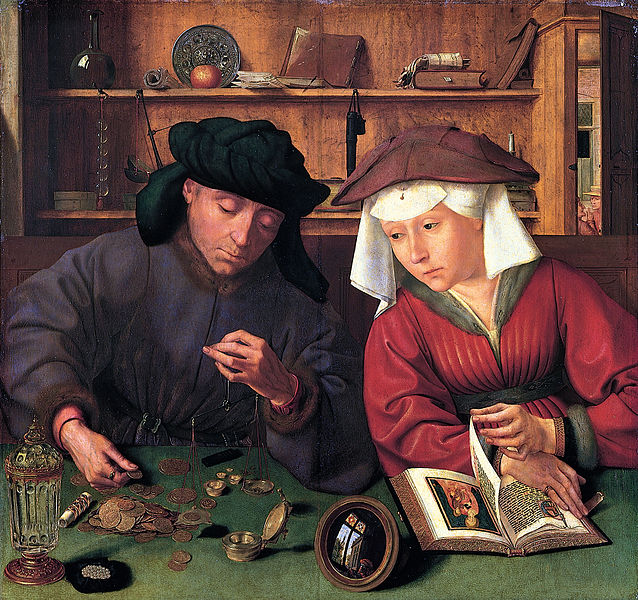

Virtue and Commerce: Republicanism and the Development of the Global Economy
Taught: Spring 2016

The financial crash of 2008 brought questions of virtue and commerce to the forefront of the American consciousness as people grappled with the causes of the financial collapse. This course examines the history of virtue in the context of the expanding global economy from the Renaissance to the early twentieth century. The Italian Renaissance was made possible by both an expansion of industry, banking, and trade and a rediscovery of ancient Greek and Latin texts. As much as the economic expansion might be seen to coincide with the flourishing intellectual and artistic accomplishments of the period, many Renaissance thinkers perceived commerce to be in tension with the ancient conception of republican virtue. The course follows the growth of the European economy from the Italian Peninsula in the sixteenth century to the Dutch Republic in the seventeenth century, the development of colonial and worldwide economies in the eighteenth century, and the process of industrialization in the nineteenth century. We track the changing understandings of virtue and commerce through the writings of leading theorists of the day, including James Harrington, Bernard Mandeville, Montesquieu, Jean-Jacques Rousseau, and Max Weber.